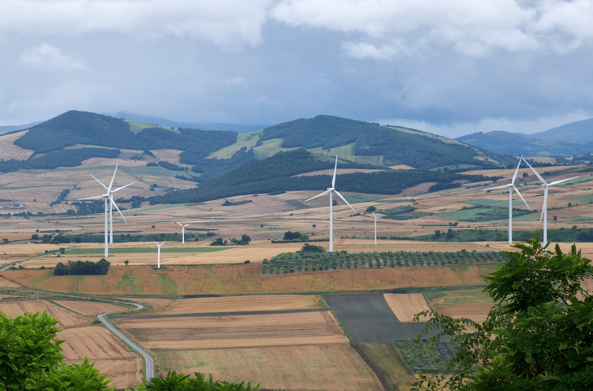

이탈리아 트로이아 시의회, 시가 창립 회원인 비영리 재생에너지공동체 설립 의결…시민·지역 업체 26곳 서명

'Troia Green Energy' 제3섹터 사단으로 출발, 첫 목표는 에너지 빈곤 막기…175.08kW 설비는 아직 계획, 주 보조금 공모 지원 앞둬
이탈리아 남부 풀리아주 포자도의 트로이아(Troia) 시의회가 이번 주 시가 창립 회원으로 참여하는 재생에너지공동체(CER) 'Troia Green Energy'의 설립 문서와 정관·내부 규정을 의결했다. 공동체는 이익을 나누지 않는 비영리 인정 사단으로 제3섹터 단체(ETS) 형태를 띠며, 시는 곧 시 예산을 들여 국가 제3섹터 단체 등록부(RUNTS) 등록을 마치겠다고 밝혔다. 시는 2025년 풀리아주 2021~2027 지역 프로그램의 에너지 공동체 지원 사업에 선정돼 설립·출범 비용 9만9,750유로를 받았고, 공동체가 세워지면 시 부지 태양광 설비비를 지원하는 주의 다음 공모에 지원해 적격 비용의 40%를 상환 없는 보조금으로 받을 수 있게 된다. 계획한 설비는 시내 여러 곳에 나눠 합계 175.08kW 규모이며 아직 지어지지 않았다. 시는 공동체의 첫 목표로 취약계층과 저소득 가구를 에너지 빈곤에서 지키는 일을 내세웠고, 에너지관리전문가가 만든 타당성 설계를 근거로 시 건물 자가소비 절감과 남는 전기 판매, 공유 인센티브 등을 합쳐 시가 해마다 4만 유로 넘는 이익을 볼 것으로 추산했다. 첫 참여 의향 모집에는 시민과 지역 업체를 합쳐 26명이 창립 회원으로 서명했으며, 프란체스코 카세르타(Francesco Caserta) 시장과 안젤로 데만누엘레(Angelo D'Emanuele) 담당 시의원은 추가 모집을 곧 열겠다며 공동체가 "열린 포용적 조직"으로 남을 것이라고 말했다.
시민에너지 관점
트로이아 시가 내놓은 연 4만 유로 넘는 이익은 시청 몫의 추산이고, 정작 첫 목표로 내건 취약 가구가 얼마를 아끼게 되는지는 아직 숫자가 없다. 지자체가 회원으로 들어가면 공동체가 시 예산을 아끼는 수단으로 기울 수 있다는 우려도 나올 수 있지만, 이익을 나누지 않는 제3섹터 법인이라는 틀에 저소득 가구 몫을 정관으로 정해 두면 공공 자원이 이웃의 전기요금 부담을 덜어 주는 쪽으로 흐르게 할 수 있다. 시 부지와 공공 보조금으로 짓는 설비일수록 시민과 저소득 가구가 회원이자 주인으로 의결권을 가져야 그 혜택이 행정의 장부가 아니라 주민의 살림에 남는다. 국내 지자체도 공공부지 태양광을 추진할 때 주민이 참여하는 비영리 법인을 먼저 세우고, 에너지 빈곤 가구에 돌아갈 몫을 숫자로 적어 넣는 데서 시작해야 한다.
출처: l'Immediato 2026-10-30 Redazione 원문 보기
イタリア・トロイア市議会、市が創設会員となる非営利の再生可能エネルギー共同体の設立を議決…市民・地元企業26者が署名
「Troia Green Energy」は第三セクター社団として出発、第一の目標はエネルギー貧困対策…175.08kWの設備はまだ計画段階、州の補助金公募への応募を控える
イタリア南部プーリア州フォッジャ県のトロイア（Troia）市議会は今週、市が創設会員として加わる再生可能エネルギー共同体（CER）「Troia Green Energy」の設立文書と定款・内部規程を議決した。共同体は利益を分配しない非営利の認可社団で、第三セクター団体（ETS）の形をとり、市は近く市の予算で国の第三セクター団体登録簿（RUNTS）への登録を済ませると明らかにした。市は2025年、プーリア州の2021～2027年地域プログラムのエネルギー共同体支援事業に選ばれ、設立・立ち上げ費用として9万9,750ユーロを受けており、共同体が発足すれば、市有地の太陽光設備費を支援する州の次の公募に応募し、対象経費の40%を返済不要の補助金として受けられるようになる。計画中の設備は市内の複数の地点に分散した合計175.08kWで、まだ建設されていない。市は共同体の第一の目標として、弱者や低所得世帯をエネルギー貧困から守ることを掲げ、エネルギー管理の専門家がまとめた実現可能性設計をもとに、市の建物での自家消費による節約、余剰電力の売電、共有インセンティブなどを合わせて、市が毎年4万ユーロを超える利益を得ると試算した。最初の参加意向募集では市民と地元企業を合わせて26者が創設会員として署名し、フランチェスコ・カゼルタ（Francesco Caserta）市長とアンジェロ・デマヌエーレ（Angelo D'Emanuele）担当市議は、追加募集を近く行うとしたうえで、共同体は「開かれた包摂的な組織」であり続けると述べた。
市民エネルギーの視点
トロイア市が示した年4万ユーロ超の利益は市役所の取り分の試算であり、第一の目標に掲げた弱者世帯がいくら節約できるのかはまだ数字がない。自治体が会員に入ると、共同体が市の予算を節約する手段に傾きかねないとの懸念も出るだろうが、利益を分配しない第三セクター法人という枠組みに低所得世帯の取り分を定款で定めておけば、公共の資源を隣人の電気料金負担の軽減へと向かわせることができる。市有地と公的補助金で建てる設備であるほど、市民と低所得世帯が会員かつ持ち主として議決権を持ってこそ、その恩恵が行政の帳簿ではなく住民の暮らしに残る。韓国の自治体も公有地での太陽光を進める際は、住民が参加する非営利法人をまず立ち上げ、エネルギー貧困世帯に回る取り分を数字で書き込むところから始めるべきだ。
出典: l'Immediato 2026-10-30 編集部（Redazione） 原文を読む
意大利特罗亚市议会表决设立由市政府担任创始会员的非营利可再生能源社区…市民和本地企业共26方签署
"Troia Green Energy"以第三部门社团形式起步，首要目标是应对能源贫困…175.08kW设备仍在计划阶段，即将申请大区补助
意大利南部普利亚大区福贾省特罗亚（Troia）市议会本周表决通过了可再生能源社区（CER）"Troia Green Energy"的设立文件、章程和内部规则，市政府将作为创始会员加入。该社区是不分配利润的非营利认可社团，采取第三部门组织（ETS）形式，市政府表示将很快动用市财政完成在国家第三部门组织登记册（RUNTS）的登记。市政府2025年入选普利亚大区2021～2027年地区计划中的能源社区支持项目，获得设立和启动费用9万9,750欧元；社区成立后，可申请大区下一轮资助市属用地光伏设备费用的公开招募，获得合格费用40%的无偿补助。计划中的设备分布在市内多处，合计175.08kW，目前尚未建设。市政府把保护弱势群体和低收入家庭免于能源贫困列为社区的首要目标，并依据能源管理专家编制的可行性设计估算，把市属建筑自用节省的电费、余电出售和共享激励等加在一起，市政府每年可获益超过4万欧元。在首轮参与意向征集中，市民和本地企业合计26方签署成为创始会员；市长弗朗切斯科·卡塞尔塔（Francesco Caserta）和主管市议员安杰洛·德曼努埃莱（Angelo D'Emanuele）表示将很快开放新一轮招募，并称社区将始终是"开放、包容的组织"。
市民能源视角
特罗亚市提出的每年超过4万欧元的收益是市政府自身份额的估算，而被列为首要目标的弱势家庭能省下多少钱，目前还没有数字。有人可能担心地方政府入会后，社区会偏向成为节省市财政的工具，但在不分配利润的第三部门法人框架内，用章程写明低收入家庭的份额，就能让公共资源流向减轻邻里电费负担的方向。越是用市属土地和公共补助建设的设备，越需要市民和低收入家庭以会员兼所有者的身份拥有表决权，收益才会留在居民的生活里，而不是只停留在行政账本上。韩国地方政府推动公有地光伏时，也应先成立有居民参与的非营利法人，并从用数字写明能源贫困家庭应得份额做起。
来源: l'Immediato 2026-10-30 编辑部（Redazione） 查看原文
Italy's Troia council votes to set up a non-profit renewable energy community with the town as founding member; 26 residents and local firms sign on
'Troia Green Energy' starts as a Third Sector association whose first aim is fighting energy poverty; its 175.08 kW of installations are still planned, ahead of an application for regional subsidies
The town council of Troia, in the province of Foggia in Italy's southern Apulia region, this week approved the founding deed, statute and internal rules of 'Troia Green Energy', a renewable energy community (CER) in which the municipality takes part as a founding member. The community is a non-profit recognised association that does not distribute profits and is organised as a Third Sector entity (ETS), and the town said it would soon use municipal funds to complete its entry in the national Third Sector register (RUNTS). In 2025 the town was selected under Apulia's 2021-2027 regional programme for energy community support and received 99,750 euros for setup and start-up costs; once the community is formed, it can apply to the region's next call funding solar installations on municipal land and receive a non-repayable grant covering 40% of eligible costs. The planned installations, spread across several sites in town, total 175.08 kW and have not yet been built. The town named protecting vulnerable people and low-income households from energy poverty as the community's first goal and, citing a feasibility design drawn up by an energy management expert, estimated that it would gain more than 40,000 euros a year from savings on self-consumption in municipal buildings, sales of surplus power and sharing incentives combined. In the first call for expressions of interest, 26 residents and local businesses signed up as founding members, and Mayor Francesco Caserta and councillor Angelo D'Emanuele, who holds the portfolio, said a further call would open soon and that the community would remain "open and inclusive."
Citizen Energy View
The more than 40,000 euros a year that Troia has announced is an estimate of the town hall's own share, while there is still no figure for how much the vulnerable households named as the first goal will save. Some may worry that a community with the municipality as a member will drift into a tool for cutting the town's own bills, but if the statute of a non-profit Third Sector body sets out a share for low-income households, public resources can be steered toward easing neighbours' electricity costs. The more an installation relies on municipal land and public grants, the more residents and low-income households need voting rights as members and owners, so that the benefits stay in household budgets rather than only in the town's accounts. Local governments in Korea pursuing solar on public land should likewise start by setting up a non-profit body with residents as members and writing down, in numbers, the share that goes to energy-poor households.
Source: l'Immediato 2026-10-30 Editorial staff (Redazione) Read the original